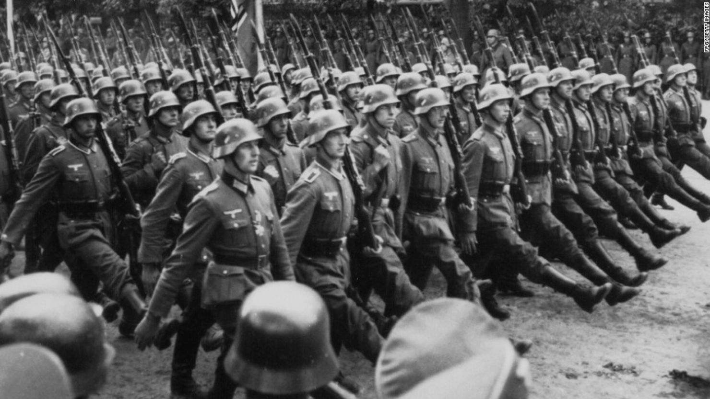
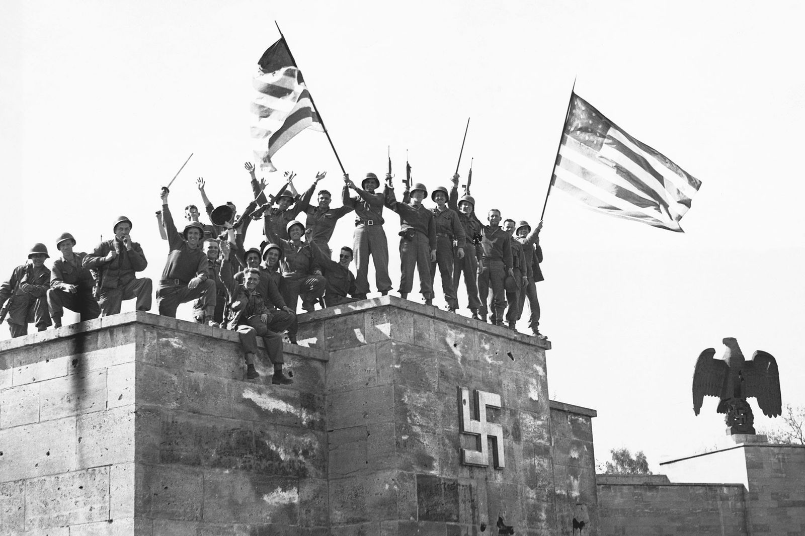
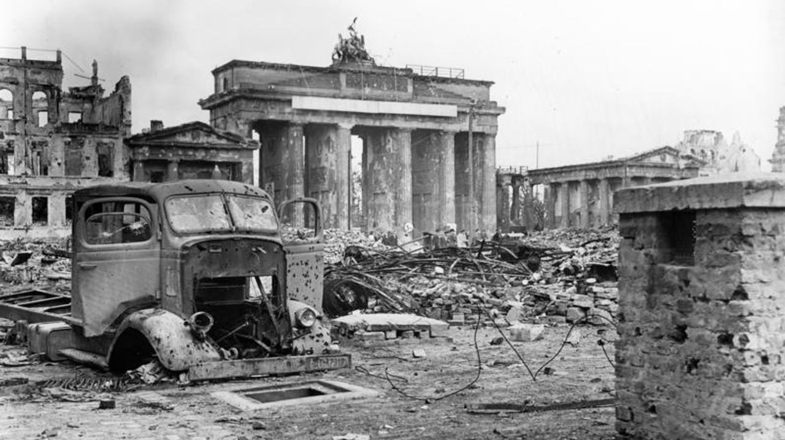

Segunda Guerra Mundial
La Segunda Guerra Mundial fue un conflicto militar global que se desarrolló entre 1939 y 1945. En ella se vieron implicadas la mayor parte de las naciones del mundo incluidas todas las grandes potencias, así como prácticamente todas las naciones europeas agrupadas en dos alianzas militares enfrentadas: los Aliados, por un lado, y las Potencias del Eje, por otro. Fue la mayor contienda bélica en la historia de la humanidad, con más de cien millones de militares movilizados y un estado de guerra total en que los grandes contendientes destinaron toda su capacidad económica, militar y científica al servicio del esfuerzo bélico, borrando la distinción entre recursos civiles y militares. Marcada por hechos de enorme repercusión que incluyeron la muerte masiva de civiles (el Holocausto, los bombardeos masivos sobre ciudades y el uso, por primera vez en un conflicto bélico, de armas nucleares), la Segunda Guerra Mundial fue la más mortífera de la historia, con un resultado de entre 50 y 70 millones de víctimas, el 2,5 % de la población mundial de esa época.
Aliados: Francia, Reino Unido, Unión Soviética, EE.UU., y más.
Potencias del Eje: Alemania, Italia, Japón y sus aliados.
La guerra estalló con la invasión alemana a Polonia el 1 de septiembre de 1939.
En 1941, la necesidad estratégica de ocupar los campos petrolíferos del Cáucaso impulsó a Alemania a invadir la Unión Soviética (operación Barbarroja), inicialmente exitosa, pero que se estancó en la batalla de Moscú y los sitios de Leningrado y Stalingrado. Al mismo tiempo, Japón, en su campaña de expansión por Asia y en venganza por el embargo económico que el gobierno estadounidense les había impuesto, atacó Pearl Harbor el 7 de diciembre de 1941; la agresión precipitó la entrada de Estados Unidos en la guerra. Pocos meses después, la batalla de Midway (en julio de 1942) marcaría un punto de inflexión en la guerra del Pacífico ante el debilitamiento de la capacidad de combate japonesa frente a los estadounidenses. En el norte de África, los británicos frenaron el avance de los Afrika Korps alemanes desde Libia hacia Egipto en la batalla de El Alamein (1942), después de la invasión italiana al canal de Suez (1940).
El periodo final de la guerra se caracterizó por las complejas operaciones necesarias para los desembarcos aliados en Europa (Sicilia, en julio de 1943; Anzio, en enero de 1944; Normandía, en junio de 1944) y por el hundimiento del frente oriental, en el que se libraron las operaciones con tanques más encarnizadas de la historia (batalla de Kursk, especialmente en Prójorovka, julio de 1943), mientras en el frente occidental los alemanes experimentaban armas tecnológicamente muy desarrolladas (misiles V-1 y V-2) y soportaban bombardeos destructivos sobre sus ciudades a una escala nunca antes vista (bombardeo de Dresde, en febrero de 1945) y la destrucción total de su capital (batalla de Berlín, entre abril y mayo de 1945).
Causas
Las causas de las guerras mundiales fueron múltiples. Algunas fueron más inmediatas y desencadenaron el estallido de la violencia, mientras que otras tenían que ver con conflictos que se venían desarrollando desde hacía varios años.
Primera Guerra Mundial: En el caso de la Primera Guerra Mundial, las causas fueron principalmente las tensiones entre las potencias europeas por el reparto colonial de África y Asia y el sistema de alianzas que comprometía a las naciones a apoyarse entre sí en caso de agresión externa. A ello se sumaron la competencia por el predominio industrial y los impulsos nacionalistas.
Segunda Guerra Mundial: Las causas profundas de la Segunda Guerra Mundial se hallan en el fin de la Primera Guerra Mundial y en las humillantes condiciones que se les impusieron a los vencidos (especialmente a Alemania) mediante la firma del Tratado de Versalles (1919).
Las causas profundas de la Segunda Guerra Mundial se hallan en el fin de la Primera Guerra Mundial y en las humillantes condiciones que se les impusieron a los vencidos (especialmente a Alemania) mediante la firma del Tratado de Versalles (1919).
Consecuencias
Devastación humana y material. Más de 16 millones de muertos en la Primera Guerra y entre 40 y 60 millones en la Segunda.
Desaparición de imperios, surgimiento de EE.UU. y la URSS como superpotencias, inicio de la Guerra Fría y creación de la ONU.
¿Cómo terminó?
Aunque el fin de la guerra ya era un hecho en Europa, todavía continuaba en Japón. Allí el conflicto finalizó en agosto, inmediatamente después de que Estados Unidos lanzara bombas atómicas en las ciudades japonesas de Hiroshima (el 6 de agosto) y Nagasaki (el 9 de agosto) que ocasionaron la muerte de 120 mil civiles, según informa la Enciclopedia del Museo del Holocausto.
Días después de los bombardeos, el 14 de agosto de 1945, Japón aceptó rendirse y el 2 de septiembre lo hizo de manera formal. Con este trágico episodio se dio fin a la Segunda Guerra Mundial.